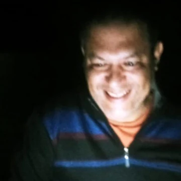

Texto e experiência de leitura
O original precisa de desenvolvimento, preparação, revisão ortográfica e gramatical ou já está pronto para seguir?
Assessoria editorial para autores de ficção e não ficção
Eu avalio o estágio da sua obra, mostro o que precisa ser desenvolvido e acompanho as etapas necessárias para transformá-la em um livro publicado, lido e apreciado pelo público-alvo.
Comece com uma avaliação editorial inicial do seu projeto.

Publicar não é apenas colocar um arquivo em uma plataforma. É tomar decisões editoriais na ordem certa para que o livro tenha qualidade, coerência visual, boa experiência de leitura e condições reais de alcançar o público-alvo.
O original precisa de desenvolvimento, preparação, revisão ortográfica e gramatical ou já está pronto para seguir?
A capa comunica gênero e público? A diagramação funciona no impresso e no digital? O projeto visual valoriza a obra?
Onde registrar a obra? Ela precisa de ISBN, ficha catalográfica e arquivos específicos para Amazon, UICLAP ou outras plataformas?
Como posicionar o livro, apresentar sua proposta, formar leitores, organizar o lançamento e ampliar as oportunidades de venda?
Você responde algumas perguntas sobre a obra e envia o primeiro capítulo. Assim, eu identifico o estágio real do projeto e indico o caminho mais adequado para publicação, melhoria ou relançamento.
Informe gênero, estágio, serviços já realizados, publicação anterior e objetivo.
A leitura observa abertura, clareza, ritmo, linguagem, estrutura, imersão e adequação ao público.
O documento apresenta forças, fragilidades, prioridades de melhoria e decisões necessárias.
Você saberá quais serviços são necessários, em que ordem avançar e como preparar a obra para o mercado.
A avaliação e a assessoria são adaptadas ao estágio real da obra, sem fazer você contratar etapas que já foram concluídas.
Para quem já começou a escrever e precisa de orientação para desenvolver o original com mais clareza, estrutura e força narrativa.
Para quem concluiu o texto e precisa organizar revisão, capa, diagramação, registros, arquivos e disponibilização nas plataformas.
Para quem quer revisar a obra, melhorar capa ou projeto gráfico, reposicionar o livro e estruturar divulgação e vendas.
Este serviço é voltado a obras para o público adulto. Não trabalho com literatura infantil nesta modalidade.
Eu reúno as etapas editoriais, técnicas e comerciais necessárias para preparar, publicar e posicionar o livro com coerência.
Leitura editorial, análise crítica, estrutura, enredo, personagens, clareza e acompanhamento da escrita.
Correção ortográfica e gramatical, fluidez, consistência e preservação da voz do autor.
Orientação e suporte com direitos autorais, ISBN, ficha catalográfica, código de barras e demais necessidades.
Projeto visual alinhado ao gênero, ao posicionamento, ao público e às plataformas.
Preparação do miolo para leitura confortável e profissional em formato impresso e digital.
Preparação técnica dos formatos necessários para e-book, impressão sob demanda e distribuição.
Configuração e disponibilização do livro em formato digital e físico nas plataformas escolhidas.
Plano estruturado para apresentar a obra, formar leitores, organizar lançamento, gerar indicações e buscar retorno.
Descubra quais dessas etapas o seu projeto realmente precisa.
Quero uma análise para publicar o meu livro
Sou editor-chefe da Editora Fantásticos, atuo há sete anos no mercado editorial, escrevi mais de vinte livros como ghostwriter e sou autor de A Lenda de Materyalis.
Além de conhecer os processos técnicos de preparação e publicação, eu entendo o que significa desenvolver uma obra, preservar a identidade do autor e pensar na experiência que o texto precisa criar no leitor.
Meu objetivo é ajudar autores a publicar livros com qualidade de imersão, capazes de ser lidos, apreciados, indicados e valorizados pelo público-alvo — em escala cada vez maior, com um trabalho editorial que também considere divulgação e retorno.
Relatos de quem viveu o processo editorial com orientação técnica, escuta e respeito à identidade da obra.
Autor de Selene
O Saymon foi bastante importante na criação dos meus livros, pois me deu a orientação necessária para transformar ideias soltas em uma história que, além de tudo, possa ser atraente para os leitores. Sem falar em toda a parte de revisão e na parte burocrática para que esse sonho de escrever e lançar um livro vire realidade, e em todo o suporte posterior com as redes sociais.
Contista do Universo Heróis Fantásticos
Saymon é um caso raro que equilibra escuta ativa e feedbacks precisos. Analisar o texto de outra pessoa requer uma dose balanceada de empatia e objetividade. É isso que sempre encontro nele. A parceria com ele tem me ajudado a desenvolver o que preciso para usar meu talento. Ele tem a habilidade rara de mostrar minhas falhas e ainda sair com um “muito obrigado!”, porque a edição dele sempre mostra um caminho para seguir e uma possível versão ainda melhor daquele texto.
Autora de O Legado Grayson
O Saymon faz muito mais do que editar um texto: ele entende a essência da história. Suas sugestões são sempre bem fundamentadas e respeitam a identidade da obra e a voz do autor. Trabalhar com ele tem feito toda a diferença no desenvolvimento do meu livro. Sou muito grata por todo o cuidado e recomendo seu trabalho com total confiança.

Autor de Pote de Ouro
Aprendi com Saymon César o zelo que nós, autores, devemos ter com nossas obras ao construir uma escrita imersiva, com a responsabilidade de entregar o melhor para nossos leitores.
Autora e designer
A assessoria fez toda a diferença no desenvolvimento do meu texto. O profissionalismo, a atenção aos detalhes e as orientações cuidadosas contribuíram para que a obra alcançasse um alto padrão de qualidade, sempre respeitando minha voz como autora. Recomendo pelo comprometimento e excelência no trabalho.
Autor
Saymon é o responsável pelo amadurecimento do meu livro. Além de apontar repetições, problemas de ritmo e coerência, ele me ajuda a encontrar caminhos para contornar os desafios da escrita, desenvolvendo melhor as cenas. O livro ficou mais fluido e consistente, sem descaracterizar meu estilo ou o que eu queria transmitir.
Autor de A Caldeira de Sangue
Quando comecei a escrever, sabia da história que queria contar, mas não fazia ideia do seu potencial. O Saymon entrou nesse processo não apenas como editor, mas como professor. Cada conversa, cada comentário e cada sugestão me fizeram amadurecer e ampliar o nível da minha escrita. Hoje, olhando para o resultado final, tenho certeza de que A Caldeira de Sangue não seria o mesmo livro sem a participação dele. Sou profundamente grato por toda a dedicação, paciência e confiança ao longo dessa jornada.
O formulário reúne os dados do projeto e envia o documento diretamente para a pasta de avaliações editoriais.
Não. Posso avaliar um projeto em andamento, um original concluído ou uma obra já publicada. A recomendação muda conforme o estágio e o objetivo.
A avaliação inicial considera o formulário e o primeiro capítulo para mapear o estágio da obra e orientar os próximos passos. Uma análise integral, quando necessária, é proposta separadamente.
Não. A avaliação identifica o que já está resolvido e o que ainda precisa ser feito. Você pode contratar etapas específicas ou uma assessoria completa.
Este serviço é uma assessoria para publicação independente. A obra é preparada e publicada em nome do autor nas plataformas definidas para o projeto.
Atendo diferentes gêneros de ficção e não ficção voltados ao público adulto. Literatura infantil não faz parte desta modalidade.
Depois de conhecer o estágio da obra e os serviços necessários, preparo uma proposta coerente com o projeto, sem incluir etapas que já estejam concluídas.
Avaliação editorial, orientação sobre o estágio da obra, produção, publicação, posicionamento, divulgação e vendas — organizados de acordo com o que o seu projeto realmente necessita.